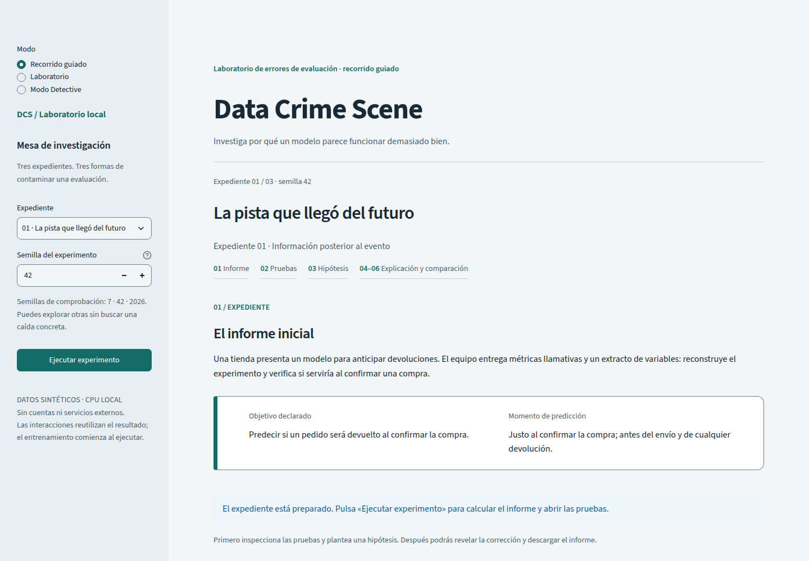

1. What I measured
What happens when a group requests experiments at the same time? I measured how many requests returned results and how long they waited. The observed problem was rejection while a calculation was active: anyone left out had to click again.
These were simulated requests run locally, with real experiments on synthetic data. No real users took part, and the hosted demo’s capacity was not measured.
Initial Chrome test · 7 November 2026
Using independent browser contexts, batches of 5 and 10 returned one result per batch; the remaining requests were rejected. Each level was repeated three times. The 20 sessions were prepared, but the load generator exceeded its preventive memory threshold before any experiments were launched.
That attempt at 20 does not demonstrate a lack of server capacity. The policy allowed only one active calculation; a larger machine alone would not resolve those rejections.

2. What I compared
Later HTTP comparison · 9 November 2026
I compared immediate rejection and a bounded FIFO queue using the same lightweight HTTP client and experiment engine. This campaign used neither Chrome nor the Streamlit interface. The selector shows the future series with distinct seeds (42…61 depending on batch size), with no cache reuse between requesters.
Each level sums three independent batches, each starting with a new process, cold cache and empty budget. Both policies received the same configurations, with their order alternated. This does not represent a continuous workshop.
Results by batch size
3 batches of 20 requests: 60 requests in total per policy.
Rejection · results
10/60
Last JSON received: 1.34 s (observed maximum among successful results).
FIFO · results
60/60
Last JSON received: 62.03 s (observed maximum among successful results).
At the FIFO level of 20, 8 jobs in each batch waited for the quota to renew. Accepting a job removes the need to resubmit it; the wait remains.
| Requests / batch | Total in 3 batches | Policy | Results | Rejected | Max. to receive JSON (s) |
|---|---|---|---|---|---|
| 1 | 3 | Rejection | 3/3 | 0 | 0.257 |
| FIFO | 3/3 | 0 | 0.246 | ||
| 5 | 15 | Rejection | 3/15 | 12 | 0.365 |
| FIFO | 15/15 | 0 | 1.098 | ||
| 10 | 30 | Rejection | 3/30 | 27 | 0.461 |
| FIFO | 30/30 | 0 | 2.290 | ||
| 20 | 60 | Rejection | 10/60 | 50 | 1.340 |
| FIFO | 60/60 | 0 | 62.028 |
On narrow screens, scroll the table; with a keyboard, focus it and use the arrow keys. Totals sum three batches, not a single batch. Table times retain the report’s three decimal places.
Time runs from sending the request to retrieving its JSON in the client, including sequential polling, validation and download. It is the maximum among successful results, not pure training time or rejection time. For FIFO/20, the maximum to JSON availability on the server was 60.345 s; the maximum to retrieval by the client was 62.028 s. There were no engine errors, timeouts or lost results in completed batches.
3. What I decided
I chose a bounded queue if the requirement is to accept 20 requests without manual retries. The prototype returned all results in these local batches without adding resources. For the current hosting, I would keep coordinated turns until integration is verified there; these data alone do not justify moving to AWS.
- 1
- active calculation per process
- 12 / 60 s
- starts in a rolling window
- 3 s
- interval per session
FIFO reserves one execution slot and 19 waiting places. Accepting a queued job does not yet consume quota: the job consumes it when it starts, including cache hits. The queue orders waiting work and preserves the limits; it does not add compute capacity.
Local integration, disabled by default
It was subsequently integrated into Guided Mode through a startup option: DCS_GUIDED_FIFO=1. Omitting it or using 0 preserves the original rejection policy. The integration shares the in-process budget with Laboratory and Detective, without an extra HTTP service; those other modes retain their rejection rules.
A local functional check with two Chrome contexts verified queuing, submitted configuration and retrieval of each requester’s own JSON. This was a separate integration check, not a new capacity campaign.
Activation in the public demo has not been established. Hosting checks and a continuous workshop remain pending. The queue and budget are per process, with no coordination between replicas: restarting loses jobs and results; reloading loses the session’s access to a pending job.